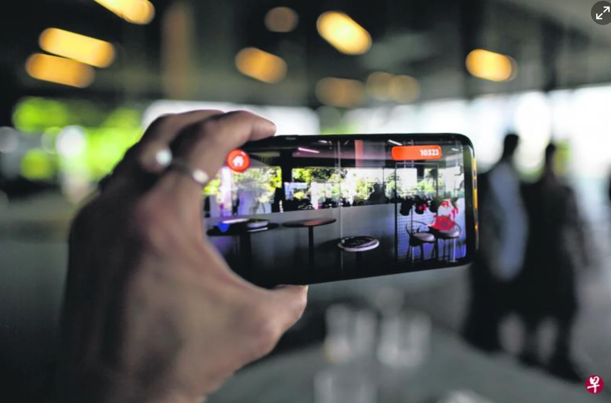
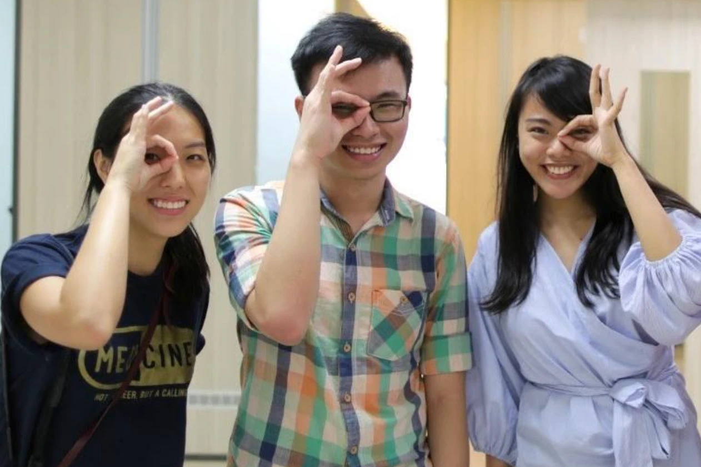

Hi, I'm Alexa!
- Strategy
- Finance
- Operations
A deliberate path to understand how different kinds of decision-makers think
I started working at 16 to pay for college and my own allowance, which meant I collected a lot of startup gigs (e.g., business analysis, content and digital marketing), odd jobs (e.g., brand ambassador for Canon), and side projects early on. They were how I figured out what I actually liked doing: analysis, closing deals, and meeting people from all walks of life and getting them to talk. Even with a full-time job, I was always experimenting with something.
While volunteering at a startup bootcamp, a mentor introduced me to a computer science student and a medical student at my college, and the three of us co-founded EyeCU, an augmented reality game simulating glaucoma that we took from 0 to 1 on iOS and Android. It was used as a facilitation tool at events to engage the public, especially underprivileged and senior citizens, and encourage regular eye screening. I ran the business side, which included partnerships, creating the pitch book and website, and fundraising for campaigns. Featured in Zaobao and published in BMJ Innovations and iovs.


After graduating, I went into strategy consulting because I wanted to understand how executives think and see more of the world. I worked on go-to-market and change management engagements for Telco, Media & Tech companies across APAC and the Middle East.
When I was ready for a steeper learning curve, I moved to New York to analyze public equities because I wanted to understand how investors think. (They don't think like operators!) Changing industry and geography at the same time was hard, which is exactly why I wanted to do it.
Today I'm a BizOps Manager at a Series C, because I wanted to own outcomes and get my hands dirty again.
Also: freelance reporter, event photographer with a thing for vintage prints, and a handful of others. See the full reel →